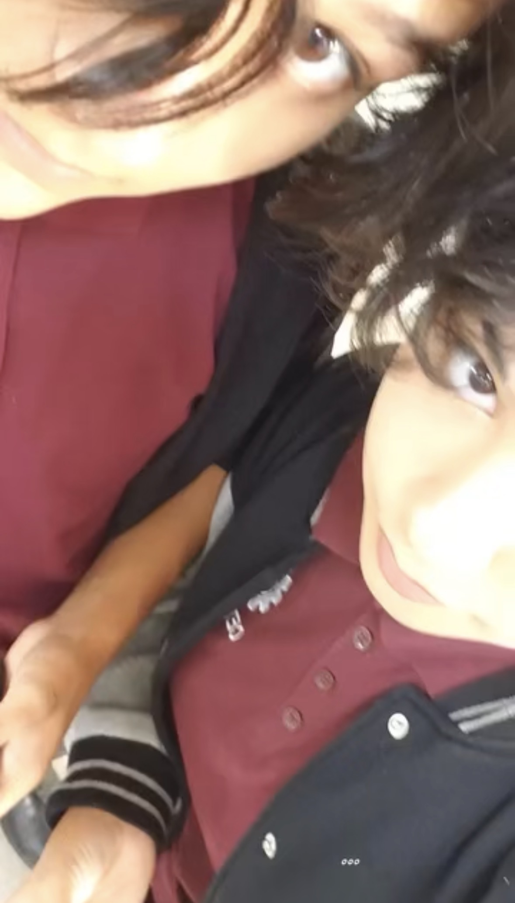

Empezamos a hablar gracias a un conocido en comun, porque ni yo ni el somos sociables ni nos animabamos a socializar. (Dato curioso, ese tipo nos hablo primero a cada uno de los dos porque ninguno convivia con nadie del salon)
Al dia siguiente de conocernos me hablo para sentarme cerca de el porque me la pasaba sola, lleve un plumon para pizarron y empezamos a escribirnos cosas en el, en la salida me compro un raspado y a partir de ahi nos volvimos mas cercanos.
Estuve cuando lo raparon por la carrera de enfermeria, cuando me abandono por irse a contabilidad, cuando lo terminaron, cuando nos traumo la misma persona y cuando empezo con otra que tambien nos traumo, lo termino y nos funo, siempre juntos en las malas porque buenas nunca hubieron.
Somos la misma cosa, pero con distinto aparato reproductor
Adjunto nuestra primera y unica foto juntos
